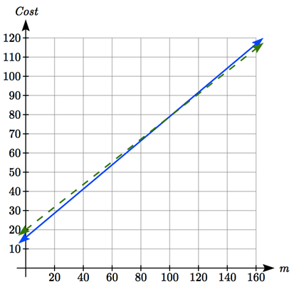

When modeling scenarios with a linear function and solving problems involving quantities changing linearly, we typically follow the same problem solving strategies that we would use for any type of function:
Definition2.3.1.Problem Solving Strategy.
Identify changing quantities, and then carefully and clearly define descriptive variables to represent those quantities. When appropriate, sketch a picture or define a coordinate system.
Carefully read the problem to identify important information. Look for information giving values for the variables, or values for parts of the functional model, like slope and initial value.
Carefully read the problem to identify what we are trying to find, identify, solve, or interpret.
Identify a solution pathway from the provided information to what we are trying to find. Often this will involve checking and tracking units, building a table or even finding a formula for the function being used to model the problem.
When needed, find a formula for the function.
Solve or evaluate using the formula you found for the desired quantities.
Reflect on whether your answer is reasonable for the given situation and whether it makes sense mathematically.
Clearly convey your result using appropriate units, and answer in full sentences when appropriate.
Example2.3.2.
Emily saved up $3500 for her summer visit to Seattle. She anticipates spending $400 each week on rent, food, and fun. Find and interpret the horizontal intercept and determine a reasonable domain and range for this function.
In the problem, there are two changing quantities: time and money. The amount of money she has remaining while on vacation depends on how long she stays. We can define our variables, including units. Output: \(M\text{,}\) money remaining, in dollars Input: \(t\text{,}\) time, in weeks
Reading the problem, we identify two important values. The first, $3500, is the initial value for \(M\text{.}\) The other value appears to be a rate of change – the units of dollars per week match the units of our output variable divided by our input variable. She is spending money each week, so you should recognize that the amount of money remaining is decreasing each week and the slope is negative. To answer the first question, looking for the horizontal intercept, it would be helpful to have an equation modeling this scenario. Using the intercept and slope provided in the problem, we can create the function: \(f(t)=M\text{,}\)\(f(t)=3500-400t\text{.}\)
To find the horizontal intercept, we set the output to zero, and solve for the input:
The horizontal intercept is 8.75 weeks. Since this represents the input value where the output will be zero, interpreting this, we could say: Emily will have no money left after 8.75 weeks.
When modeling any real life scenario with functions, there is typically a limited domain over which that model will be valid – almost no trend continues indefinitely. In this case, it certainly doesn’t make sense to talk about input values less than zero. It is also likely that this model is not valid after the horizontal intercept (unless Emily’s going to start using a credit card and go into debt).
The domain represents the set of input values and so the reasonable domain for this function is \(0\leq t\leq 8.75\text{.}\)
The range represents the set of output values and she starts with $3500 and ends with $0 after 8.75 weeks so the corresponding range is \(0\leq M\leq 3500\text{.}\)
Checkpoint2.3.3.
A database manager is loading a large table from backups. Getting impatient, she notices 1.2 million rows had been loaded. Ten minutes later, 2.5 million rows had been loaded. How much longer will she have to wait for all 80 million rows to load?
Example2.3.4.
Jamal is choosing between two moving companies. The first, U-Haul, charges an up-front fee of $20, then 59 cents a mile. The second, Budget, charges an up-front fee of $16, then 63 cents a mile . When will U-Haul be the better choice for Jamal?
The two important quantities in this problem are the cost, and the number of miles that are driven. Since we have two companies to consider, we will define two functions:
Input: \(m\text{,}\) miles driven
Outputs:
\(Y(m)=\) cost, in dollars, for renting from U-Haul,
\(B(m)=\) cost, in dollars, for renting from Budget.
Reading the problem carefully, it appears that we were given an initial cost and a rate of change for each company. Since our outputs are measured in dollars but the costs per mile given in the problem are in cents, we will need to convert these quantities to match our desired units: $0.59 a mile for U-Haul, and $0.63 a mile for Budget.
Looking to what we’re trying to find, we want to know when U-Haul will be the better choice. Since all we have to make that decision from is the costs, we are looking for when U-Haul will cost less, or when \(Y(m)<B(m)\text{.}\) The solution pathway will lead us to find the equations for the two functions, find the intersection, then look to see where the \(Y(m)\) function is smaller. Using the rates of change and initial charges, we can write the equations:
\begin{equation*}
Y(m)=20+0.59m,
\end{equation*}
\begin{equation*}
B(m)=16+0.63m.
\end{equation*}
These graphs are sketched below, with \(Y(m)\) drawn dashed.

Figure2.3.5.
To find the intersection, we set the equations equal and solve:
This tells us that the cost from the two companies will be the same if 100 miles are driven. Either by looking at the graph, or noting that \(Y(m)\) is growing at a slower rate, we can conclude that U-Haul will be the cheaper price when more than 100 miles are driven.
Example2.3.6.
A town’s population has been growing linearly. In 2004 the population was 6,200. By 2009 the population had grown to 8,100. If this trend continues,
Predict the population in 2013.
When will the population reach 15000?
The two changing quantities are the population and time. While we could use the actual year value as the input quantity, doing so tends to lead to very ugly equations, since the vertical intercept would correspond to the year 0, more than 2000 years ago! To make things a little nicer, and to make our lives easier too, we will define our input as years since 2004: Input: \(t\text{,}\) years since 2004 Output: \(f(t)\text{,}\) the town’s population
The problem gives us two input-output pairs. Converting them to match our defined variables, the year 2004 would correspond to \(t = 0\text{,}\) giving the point \((0, 6200)\text{.}\) Notice that through our clever choice of variable definition, we have “given” ourselves the vertical intercept of the function. The year 2009 would correspond to \(t = 5\text{,}\) giving the point \((5, 8100)\text{.}\)
To predict the population in 2013, when \(t = 9\text{,}\) we would need an equation for the population. Likewise, to find when the population would reach 15000, we would need to solve for the input that would provide an output of 15000. Either way, we need an equation. To find it, we start by calculating the rate of change:
\(m=\dfrac{8100-6200}{5-0}=\dfrac{1900}{5}=380\) people per year
Since we already know the vertical intercept of the line, we can immediately write the equation: \(f(t)=6200+380t\)
To predict the population in 2013, we evaluate our function at \(t = 9\text{:}\)\(f(9)=6200+380(9)=9620.\) If the trend continues, our model predicts a population of 9,620 in 2013.
To find when the population will reach 15,000, we can set \(f(t) = 15000\) and solve for \(t\text{.}\)
Our model predicts the population will reach 15,000 in a little more than 23 years after 2004, or somewhere around the year 2027.
Checkpoint2.3.7.
[Exercise Solutions] Letting \(t\) be the number of minutes since she got impatient, and \(N\) be the number rows loaded, in millions, we have two points: \((0, 1.2)\) and \((10, 2.5)\text{.}\)
The slope is \(m=\dfrac{2.5-1.2}{10-0}=\dfrac{1.3}{10}=0.13\) million rows per minute. We know the \(N\) intercept, so we can write the equation: \(N=0.13t+1.2.\)
To determine how long she will have to wait,we need to solve for when \(N = 80\text{.}\)\(N=0.13t+1.2=80,\)\(0.13t=78.8,\)\(t=\dfrac{78.8}{0.13}\approx 606\text{.}\) She’ll have to wait another 606 minutes, about 10 hours.